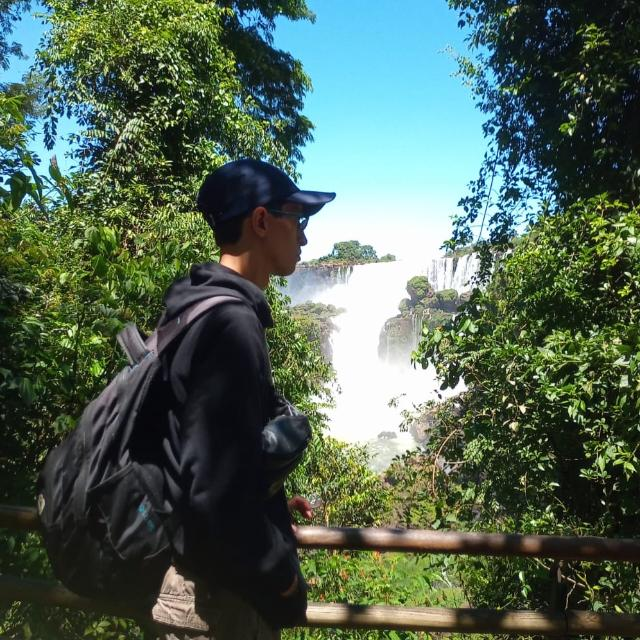

02
01
QUIÉN SOY
Tomás P
Nacido en Córdoba, Argentina, en 1998. Luego de terminar el secundario, comenzó a trabajar en ortopedia como técnico de neuronavegación en quirófanos. Más tarde, trabajó de manera independiente en seguridad eléctrica y electrónica, donde fue responsable de marketing y ventas. Adquirió conocimientos técnicos para mejorar su presencia online e impulsar las ventas. En 2026, comenzó a trabajar como diseñador web freelance. Especializado en ofrecer servicios integrales que incluyen fotografía, diseño y programación. Apasionado por ayudar a las empresas a crecer y triunfar en internet.

-

DISEÑO
Los mejores productos y servicios pueden sentirse como magia pura: transforman la complejidad en simplicidad y resuelven problemas reales de manera casi sin esfuerzo. Pero incluso la magia más poderosa necesita una varita. Así veo el diseño: no como decoración, sino como el puente esencial entre una solución brillante y las personas que la necesitan. Cada día me esfuerzo por crear interfaces que se sientan intuitivas, invisibles y vivas, experiencias que ponen esa magia directamente en manos del usuario, perfectamente adaptadas a ellas.
-

TECNOLOGÍA
Como dice el dicho, "Cualquier tecnología suficientemente avanzada es indistinguible de la magia.". Y lo creo de todo corazón. La tecnología tiene un poder sin igual para transformar el mundo y cambiar vidas, y ese potencial impulsa todo lo que hago. Estoy comprometido a mantenerme a la vanguardia, abrazando el cambio no como un desafío, sino como una oportunidad. Porque la innovación no se difunde sola: es la misión compartida de ingenieros y diseñadores llevarla a quienes más la necesitan. Esa es la chispa que aporto a cada proyecto.
-

HISTORIA
Detrás de todo gran producto vive una narrativa: un viaje desde la confusión hacia la claridad, desde la frustración hacia el deleite. El diseño y la marca no son simples elecciones visuales; son los capítulos, el ritmo y la voz que guían al usuario en ese camino. Creo que las interfaces más poderosas no solo funcionan, sino que resuenan. Hacen que el usuario se sienta comprendido, visto y acompañado. Cuando diseño e historia se fusionan, un producto deja de ser una herramienta y se convierte en una experiencia que vale la pena recordar.
03